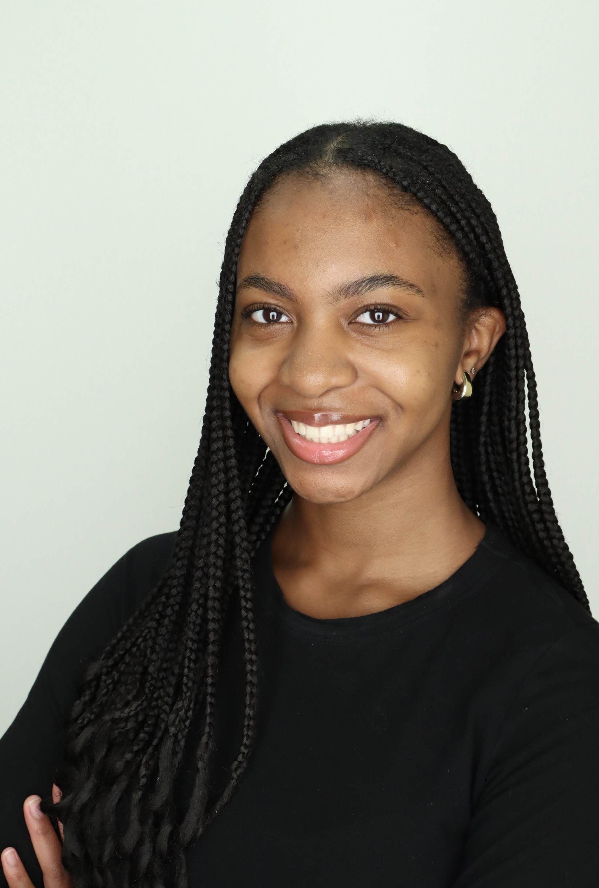

I'm a junior multiplatform journalism major and economics minor at the University of Maryland.
I've a staff writer for The Diamondback, the University of Maryland's independent student newspaper since June 2026. I currently cover justice, equity and identity news across campus and in the College Park community. I've previously worked as a freelance reporter for The Diamondback for two semesters./p>
I'm interested in reporting on politics and businesses to provide a public service, which I view as the most important aspect of journalism. Through my reporting, I want to hold governments and companies accountable, elevate underrepresented voices and help the public best understand the issue and decisions that impact them most.